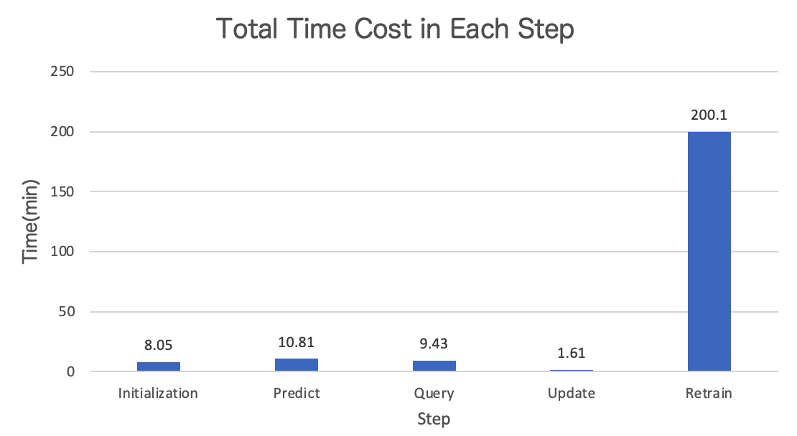

SeqAL Performance on Metrics and Time Cost
Performance
We will show the performance of SeqAL on different datasets with different language.
- Supervise means that training model on full data
- LC (Least confidence) and MNLP (Maximum Normalized Log-Probability) are query algorithm with different calculation on informativeness.
- Random means randomly query data without caring about informativeness.
- CS (Clustering Similarity) and DS (Distributed Similarity) are the diversity based sampling methods for NER
We first train the model on seed data (2% of training data). Then we query 2％ of training data in each iteration until 50% data are queried.
SeqAL on different languages
Ontonotes 5.0 (EN)
Setup: - dataset: CoNLL 2003(English) - model: Bi-LSTM CRF - total query data: 50% - epochs: 20 - batch_size: 32 - learning_rate: 0.015 - embeddings: bert-base-uncased - GPU: AWS p3.8xlarge

BCCWJ (JP)
Setup: - dataset: BCCWJ - model: Bi-LSTM CRF - total query data: 50% - epochs: 20 - batch_size: 32 - learning_rate: 0.015 - embeddings: bert-base-japanese - GPU: AWS p3.8xlarge

People's Daily 2014 (CN)
Setup: - dataset: People's Daily 2014 - model: Bi-LSTM CRF - total query data: 50% - epochs: 20 - batch_size: 32 - learning_rate: 0.015 - embeddings: bert-base-chinese - GPU: AWS ml.p3.8xlarge

SeqAL on different domain
Ritter (SNS)
Setup: - dataset: Ritter - model: Bi-LSTM CRF - total query data: 50% - epochs: 20 - batch_size: 32 - learning_rate: 0.015 - embeddings: bert-base-japanese - GPU: AWS g4dn.2xlarge

Conclusion
According to the performance of different sampling methods, MNLP is a proper baseline method. If we want to achieve high performance, we recommend MNLP+DS.
Time cost
According to the active learning cycle, we run experiments to check the time cost in each step.
{kind=link}
GPU model time cost in each step.
The GPU model is Bi-LSTM CRF model. Below is the experiment setup.
| Setup | Value |
|---|---|
| Dataset | Ontonotes 5.0 |
| Model | Bi-LSTM CRF |
| Total query data | 50% |
| Iterations | 25 |
| Epochs in each iteration | 20 |
| Batchsize | 32 |
| Learning rate | 0.015 |
| Embeddings | bert-base-uncased |
| AWS machine | AWS g4dn.2xlarge (0.752 USD/hour) |
| GPU | NVIDIA T4 |
| CPU | Intel(R) Xeon(R) Platinum 8259CL CPU @ 2.50GHz |
Below is the percentage in each step.

Below is the absolute value of time cost in each step.

Below is the GPU model performance.

CPU model time cost in each step.
The CPU model is CRF model. Below is the experiment setup.
| Setup | Value |
|---|---|
| Dataset | Ontonotes 5.0 |
| Model | CRF |
| Total query data | 50% |
| Iterations | 25 |
| Epochs in each iteration | 20 |
| Batchsize | 32 |
| Learning rate | 0.015 |
| Embeddings | bert-base-uncased |
| AWS machine | AWS c5.2xlarge (0.34 USD/hour) |
| CPU | Intel(R) Xeon(R) Platinum 8275CL CPU @ 3.00GHz |
Below is the percentage in each step.

Below is the absolute value of time cost in each step.

Below is the CPU model performance.

Conclusion
Compare with the time cost and performance on GPU model and CPU model, we recommend use the CPU model. Because CPU model can decrease the time cost greatly only sacrificing a little performance. Another reason is that CPU model is cheaper than GPU mode. The price of CPU machine is about half price of GPU machine.